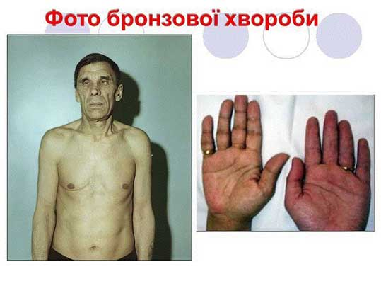

Косінський
Веб сторінка – "Косінський Олег Іванович"
Даний тег переносить текст на наступний рядок
цей текст на новому рядку
Текстові теги для задання заголовків:
Аддісонова хвороба
Виконав Косінський О.І
Камянець-Подільське медичне училище
2016 рік
Аддісонова хвороба (також — бронзова хвороба) — рідкісне хронічне ендокринне захворювання, при якому наднирники не продукують стероїдні гормони — (глюкокортикоїди та мінералокортикоїди).[1] Зазвичай хвороба перебігає повільно, але у певній кількості випадків прогресує, що може призвести до аддісонового кризу. Аддісоновий криз — це небезпечний для життя патологічний стан, при якому різко знижується кров'яний тиск та може розвинутись кома.[2]
Зміст
[сховати]
• 1Етимологія
• 2Клінічний перебіг
• 3Діагностика
• 4Примітки
• 5Література
• 6Посилання
Етимологія[ред. • ред. код]
Хвороба була вперше описана Т. Аддісоном (1855) та була названа на його честь.[3]
Клінічний перебіг[ред. • ред. код]
Аддісонову хворобу виявляють порівняно рідко, переважно у віці 30—50 років, в результаті автоімунного пошкодження наднирників або інфекційного їх ураження. Розвивається поступово. При Аддісоновій хворобі у хворого переважно спостерігають неспецифічні клінічні прояви: слабкість, біль в животі, розлади травлення. Специфічним є бронзове забарвлення шкіри та слизових оболонок. Порушення усіх видів обміну в подальшому призводить до глибоких дистрофічних змін в міокарді, при цьому знижується скорочувальна здатність міокарду, зменшується серцевий викид. Часто спостерігають тахікардію.
Перебіг і прогноз Аддісонової хвороби сприятливі за умови вчасної діагностики та адекватного лікування.
Діагностика[ред. • ред. код]
Зауважте, Вікіпедія не дає медичних порад!
Діагноз Аддісонова хвороба встановлюють на підставі таких ознак і методів дослідження:
• Клінічний аналіз крові: відзначаютьанемію, часто складного генезу — залізодефіцитна, В12-и фолієводефіцитна, гіпорегенераторна. Можливі еозинофілія, відносний лімфоцитоз, іноді лейкопенія.
• Глюкоза та інсулін: зниження рівня глюкози в крові натщесерце. При проведенні глюкозотолерантного тесту — плоска глікемічна крива з вираженою гіпоглікемічною фазою. Знижена толерантність до інсуліну — виражене падіння рівня глюкози в крові.
• Стероїдні гормони: зниження рівня в крові гюкокортикоїдів і мінералокортикоїдів.
• Електроліти: дефіцит глюкокортикоїдів і мінералокортикоїдів є причиною надмірного виділення натрію з сечею, і рівень його в крові знижується до 110 ммоль/л, хлоридів — нижче 98,4 ммоль/л, а концентрація калію піднімається вище за 5 ммоль/л. Підвищений коефіцієнт натрій / калій. Іноді підвищений вміст кальцію в сироватці крові до 4,2 ммоль/л. Гіперкальціємія в таких випадках поєднується з гіперкальцієурією, спрагою, поліурією і гіпостенурією. Абсорбція кальцію в кишечнику і його вихід з кісток збільшуються. Нормалізація кальцієвого обміну відбувається при адекватній замісній терапії.
• Функція нирок: знижується швидкість клубочкової фільтрації і ниркового кровотоку, підвищується рівень креатиніну в сироватці крові.
Примітки[ред. • ред. код]
1. Вгору↑ Melmed, S; Polonsky, KS; Larsen, PR; Kronenberg, HM (2011). Williams Textbook of Endocrinology (вид. 11th). Saunders. с. 478–479. ISBN 978-1416029113.
2. Вгору↑ de Herder, Wouter W.; van der Lely, Aart Jan (May 2003). Addisonian crisis and relative adrenal failure. Reviews in Endocrine and Metabolic Disorders 4 (2). с. 143–7. doi:10.1023/A:1022938019091. PMID 12766542.
3. Вгору↑ Українська радянська енциклопедія : [у 12-ти т.] / гол. ред. М. П. Бажан ; редкол.: О. К. Антонов та ін. — 2-ге вид. — К. : Головна редакція УРЕ, 1974–1985.
Література[ред. • ред. код]
• H. Maurice Goodman Basic Medical Endocrinology, Fourth Edition Academic Press;2008 — 344 pages ISBN 978-0123739759 (англ.)
• Rose, Noel R.; Mackay, Ian R. (2014). The autoimmune diseases (5 ed.). San Diego, CA: Elsevier Science. p. 605. ISBN 9780123849304. (англ.)
• Nieman LK, Chanco Turner ML (2006). «Addison's disease». Clinics in Dermatology 24 (4): 276—280. (англ.)
• Michels A, Michels N (1 Apr 2014). «Addison disease: early detection and treatment principles». Am Fam Physician 89 (7): 563–8. (англ.)
Посилання[ред. • ред. код]
• Addison's Disease. National Endocrine and Metabolic Diseases Information Service. Процитовано 26 October 2007. (англ.)
• Kennedy, Ron. Addison's Disease. The Doctors' Medical Library. (англ
Висновки
Дякую за увагу
